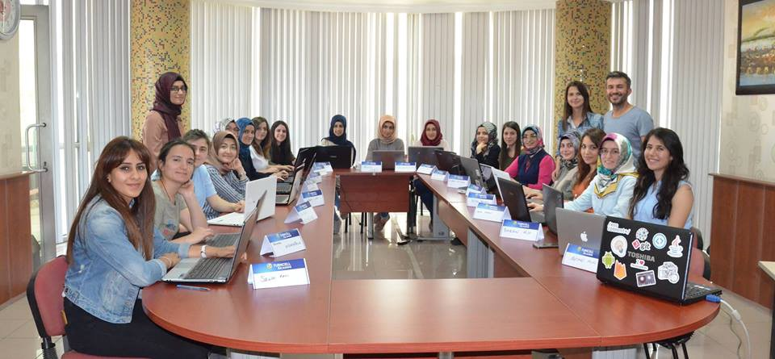
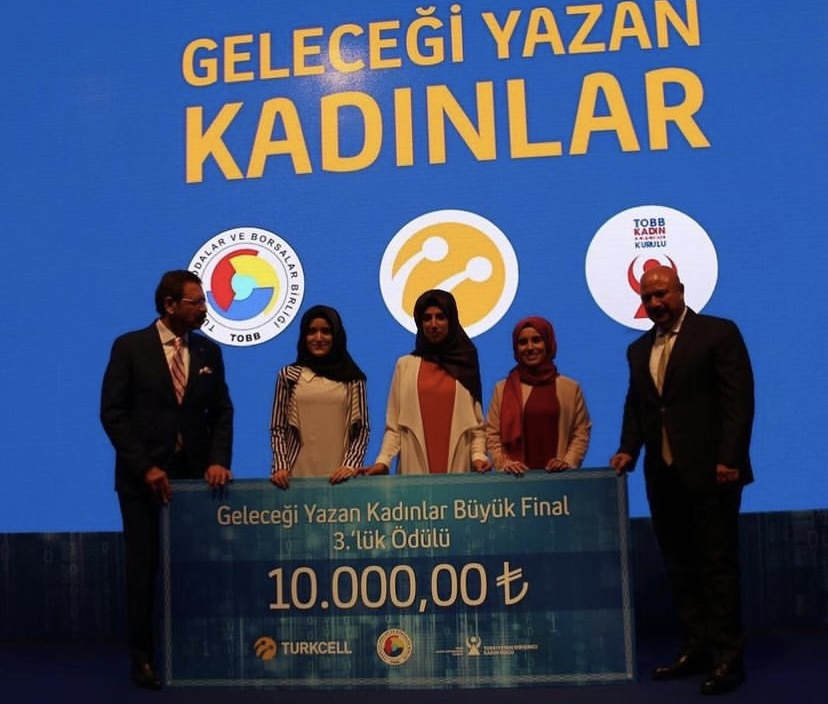
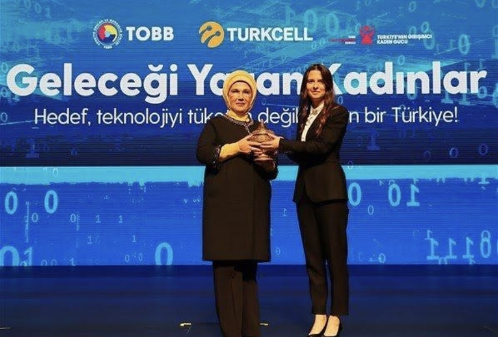

<div id="portfolio-page" class="portfolio-page-content">
    <div class="container">
        <div class="portfolio-nav">
            <div id="portfolio-close-button" class="portfolio-close-button">
                <a href="#portfolio"><i class="fa fa-close"></i></a>
            </div>
        </div>

        <div class="portfolio-title">
            <h1>What did I do in the Turkcell Technology Company? 👩🏽‍💻</h1>
        </div>

        <div class="row">


            <div class="col-sm-12 col-md-12 portfolio-block">
                <!-- Project Description -->
                <div class="block-title">
                    <h3>Turkcell</h3>
                </div>

                <p class="text-justify  portfolio-block-description">Turkcell is one of the largest telecom companies in Turkey. I worked at Turkcell Technology as an Android Developer for about 3 years. There are many different technology projects in Turkcell, I worked in the Paycell team.

                    Paycell is a mobile application that offers financial solutions such as bill payment, online shopping, money transfer, OR transactions. There are 20Mn+ users on Android, iOS, Huawei platforms.</p>

            </div>

            <div class="block-title">
                <h3><br>What did I do during my Turkcell Ambassador?</h3>
                <p class="text-justify  portfolio-block-description">⭐️ When I was in the 3rd year of university, As Ambassador of Writers of the Future. During my time as an ambassador, I was Android programming instructor at Karabuk University.</p>
                <p class="text-justify  portfolio-block-description">⭐️ When I was in the 4th year of university, I was selected as an instructor for the "Women Developers of the Future" program. I established the Timya team, which consists of 80 female software developers, in Karabük.</p>
                <br>

                <div class="one-image">
                    
                </div>

                <br><br>

                <p class="text-justify  portfolio-block-description">⭐️ The project of my students are Yubiva and Wecycle selected  3rd place in Turkey and 4th in Turkey in the "Women Developers of the Future" program </p>
                <div class="one-image">
                    
                </div>
                <br>

                <p class="text-justify  portfolio-block-description">⭐ I prepared all the mobile programming educational content as a volunteer in the Women Who Write the Future program.</p>
                <p class="text-justify  portfolio-block-description">⭐ When I graduated, I worked as an Android Developer in the Paycell team at Turkcell for about 3 years.</p>
                <p class="text-justify  portfolio-block-description">⭐️ I was trainer in Şanlıurfa in the second year of the "Women Developers of the Future" program. While I was working in Paycell Team, I was trainer every weekend in Şanlıurfa for 2 months. My students completed the process as a semi-finalist with the Peace project and as a finalist with the Technoplant project.</p>
                <p class="text-justify  portfolio-block-description">⭐️ I was selected as the most successful trainer of the "Women Developers of the Future" in the competition held with the votes of the students.</p>
                <p class="text-justify  portfolio-block-description">⭐️ I took part as a speaker at the launch of  "Women Developers of the Future" at the Presidency Of The Republic Of Turkey with the participation of our very esteemed ministers and wife of the president of Turkey Ms. Emine Erdoğan.</p>
                <br><br>
                <div class="one-image">
                    
                </div>
                <br><br>

                <p class="text-justify  portfolio-block-description">⭐️ I entered the UNDP Business Call to Action agenda with my inspiring story to 80 women programmers.</p>
                <p class="text-justify  portfolio-block-description">⭐️ My speech at the launch of "Women Developers of the Future" was featured in The Guardian.</p>
                <br><br>
                <div class="one-image">
                    
                </div>
                <br><br>

                <p class="text-justify  portfolio-block-description">⭐️ My success story was included  in the CaseForChange community, which includes stories that change lives with technology.</p>
                <p class="text-justify  portfolio-block-description">⭐️ I had the opportunity to meet very valuable business people who are the President of TOBB Women Entrepreneurs Board in the cities where I teach.</p>
                <p class="text-justify  portfolio-block-description">⭐️ I had the opportunity to meet hundreds of students and instructors in different cities, with whom I was happy with their success.</p>

            </div>


        </div>


    </div>
</div>
